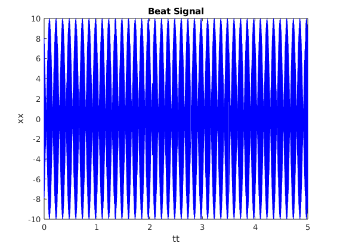
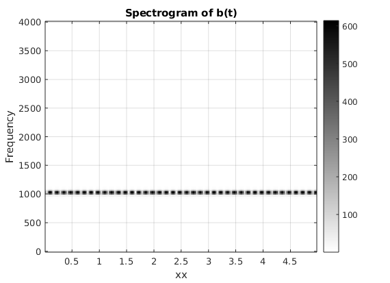
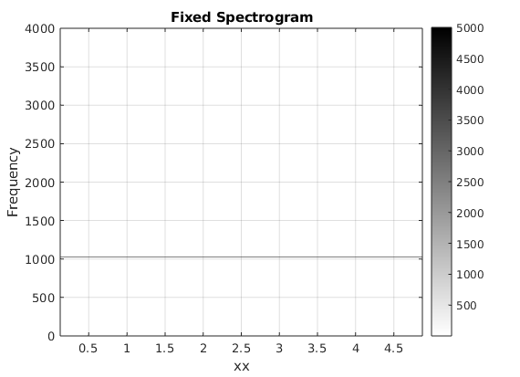
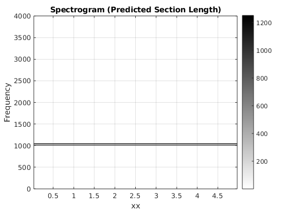

Contents
- Lab S7: Spectrograms of AM and FM signals
- A) Create and plot a beat signal, we will be analyzing this signal with spectrograms
- B) Determine the locations of the two spectrum lines that you expect to see in the spectrogram
- C) Make a spectrogram of b(t) with section length 256
- C) Comments
- D) Fixing the spectrogram section length
- 2.1.3 Inverse Relationship: Section Length vs. Frequency Resolution
- A)
- B) Repeating for new fDelta
Lab S7: Spectrograms of AM and FM signals
% 2.1 Beat Notes and Frequency Resolution
A) Create and plot a beat signal, we will be analyzing this signal with spectrograms
Amp = 10; fc = 1024; phic = 2*pi*rand; fDelta = 4; % Varied in later parts phiDelta = 2*pi*rand; tStart = 0; tStop = 5; fSamp = 8000; tt = tStart:(1/fSamp):tStop; xx = Amp*cos(2*pi*fc*tt+phic) .* cos(2*pi*fDelta*tt+phiDelta); figure(1); plot(tt,xx,'b') title("Beat Signal"); xlabel("tt"); ylabel("xx"); %soundsc(xx, fSamp);
B) Determine the locations of the two spectrum lines that you expect to see in the spectrogram
% These two frequencies are where I expect to see the spectrum lines freq1 = fc-fDelta % 1020, for spectrum line 1 freq2 = fc+fDelta % 1028, for spectrum line 2
freq1 =
1020
freq2 =
1028
C) Make a spectrogram of b(t) with section length 256
Lsect = 256; figure(2); plotspec(xx, fSamp, Lsect), colorbar, grid on title("Spectrogram of b(t)"); xlabel("xx") ylabel("Frequency")
ans =
Image with properties:
CData: [129×311 double]
CDataMapping: 'scaled'
Use GET to show all properties
 C) Comments
This section length is too small, and so the spectrum plot doesn't clearly show 2 lines. Instead I only see what looks like one line at roughly 1020 or so. Using a longer section length is required.
D) Fixing the spectrogram section length
Lsect = 4000; % Lsect 3500 is not accurate, so this is close by the nearest 500 figure(3); plotspec(xx, fSamp, Lsect), colorbar, grid on, zoom on title("Fixed Spectrogram"); xlabel("xx") ylabel("Frequency") % The Lsect we used Lsect % The spectrum lines seem correct with this value of Lsect % The Tsect Tsect = Lsect/fSamp
ans =
Image with properties:
CData: [2001×19 double]
CDataMapping: 'scaled'
Use GET to show all properties
Lsect =
4000
Tsect =
0.5000
 2.1.3 Inverse Relationship: Section Length vs. Frequency Resolution
A)
C_constant = Tsect * abs(freq1 - freq2)
C_constant =
4
B) Repeating for new fDelta
fDelta = 16; % New fDelta for part B freq1 = fc-fDelta % 1008 freq2 = fc+fDelta % 1040 % Estimating the correct Lsect using our constant from before Tsect = C_constant / (abs(freq1 - freq2)) Lsect = Tsect*fSamp tt = tStart:(1/fSamp):tStop; xx = Amp*cos(2*pi*fc*tt+phic) .* cos(2*pi*fDelta*tt+phiDelta); figure(4); plotspec(xx, fSamp, Lsect), colorbar, grid on, zoom on title("Spectrogram (Predicted Section Length)"); xlabel("xx") ylabel("Frequency") % If we zoom in on this figure we can clearly see the spectrum lines % are at 1008 and 1040, which means this approximate method worked out % here without the need to adjust.
freq1 =
1008
freq2 =
1040
Tsect =
0.1250
Lsect =
1000
ans =
Image with properties:
CData: [501×79 double]
CDataMapping: 'scaled'
Use GET to show all properties
